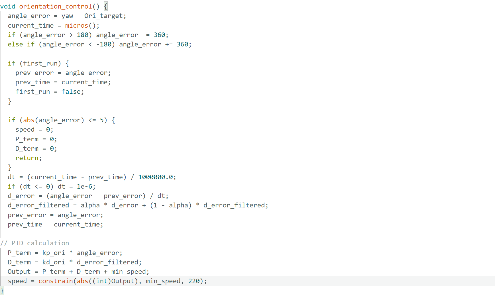
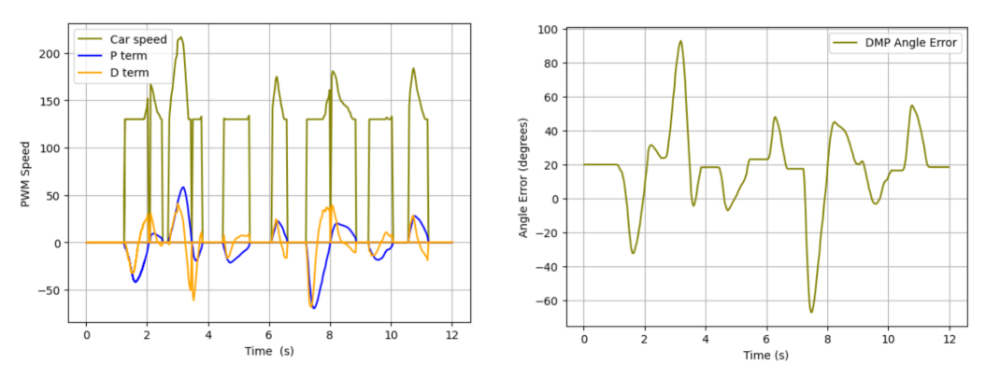
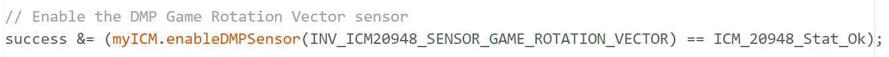
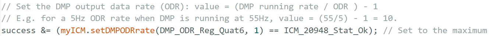
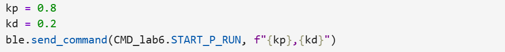

Lab 6：Orientation Control
Pre Lab
For this lab, we want to use IMU to implement orientation control. Based on the demo video,
we basically want to achieve that car can return to its original orientation to remain stationary
while its orientation is interrupted by external force.
I almost had a nightmare dealing with drift of data when handling IMU in lab 2, so I chose to use DMP this lab to minimize the yaw drift. Thanks to Stephan's DMP orientation, I set up DMP into my code well.
To receive valid data from DMP, I included a boolean yaw_updated to have the check for availability for Quat6 data as an initization condition to start the loop.
if ((data.header & DMP_header_bitmap_Quat6) > 0) {
...
yaw_updated = true;
...
}
if (flag_pid && yaw_updated) {
fresh_IMU = micros();
orientation_control(); // Angle Difference Collection & PID calculation
collect_angles(); // Add values from each loop into arrays
motor_action(angle_error); // Motor Action corresponds to sign of Angle Differences
}
Part 1 PID discussion
When I was debugging my P-control, it happened that my car kept overshooting. To overcome overshoot, I added derivative control. Derivative control can provide a large opposing force when it is close to the setpoint. I set the boolean first_run and introduced low-pass filter to eliminate the speed components which is sharp, unsmooth. One Particular thing to note in the following code: I integrated the min_speed in the Output which enables controller to have the control authority even in the range (0-130 PWM) where car cannot rotate which is good for derivative control as the original data without derivative control would be linear across larger range (0-220 instead 130-220).

In terms of derivative terms, I think taking derivative of a signal that is the integral of another signal would amplify noise in the integral. Because yaw angle is derived from integrated measurements, noises present would be magnified in the computation of derivative, which is not really helpful here. Changes in setpoints would cause the error to change drastically where derivative term increases. Car may react with spinning more aggressively with high overshoot, which is seen as derivative kick, with controller producing large control signal pushing it far from equilibrium. Derivative kicks would become a problem, except low-pass filter helps to smooth the spike. Low-pass filter can filter out high-frequency changes over time which reduces errors accordingly. With LPF(low pass filter,) Car performs with less jerk and less overshoot. Derivative kicks get smaller.
In the tuning process, kp was adjusted to be larger and larger until speed is actively in the range of lower and upper boundary set by my constrain where control is responsive and system behaves predictible, easier for tuning process. In other words, this PID ensures that linear control remains effective.

Watch the video of car successfully reacting to external interference with little overshoot.The graph here showed some success and some limitation so far. Controller responds to error quickly without much stucking. D term caused damping opposing P term and car is returning towards the target repeatedly. However, it showed sometimes speed striked with two boundaries. TA proposed the concern about high lower bounary while it is actually the deadband tested from lab 4 with second-time confirmation. There remains some unsmooth lines at the top of D terms, which requires strong low-pass filtering.
Part 2 Range/Sampling Discussion
In terms of gyro limitation, I found that gyroscope has sensitivity levels +/-250, +/-500, +/-1000, and +/-2000 degrees per second from spec sheet, which coresponds to different values assigned to the gyro bit. Based on our experience with PWM speed, it is not likely that car can achieve the maximum speed (2000 degrees per second), so it is sufficient for our application. In my case, since I know I am gonna use DMP, it is auto-set by code below.

New problem comes up: my car basically ignored the original position when shifting back and started tornado-rotation mode. Thanks to TA's help, I found out that my angle difference stay zero for longer time than it actually happened. Watch the video of car keeping missing the original postion and starting tornado performance.This resulted from that ODR speed is very fast, which resulted in a small dt value, which amplified the error and resulted larger D term. In this case, controller reacts to noise instead of real motion. Therefore I changed the divider which gave me a ODR rate of 27.5 Hz. This also ensures reading data fast enough to keep up and avid chip crashing.

Also in this process, TA reminded me that I should be able to provide gain from Python which is more efficient in tuning in the future. I also noticed that my every run takes a couple steps and updating gains in Python would be very convenient. Instead of hardcoding it, gains can be logged in on the python side and read from arduino with help of Chatgpt. The code below split the string into 2 numbers and assign them to Kp and Kd.

if (cmd_type == START_P_RUN) {
myICM.resetFIFO();
robot_cmd.get_next_value(raw);
char *token = strtok(raw, ",");
if (token) kp_ori = atof(token);
token = strtok(NULL, ",");
if (token) kd_ori = atof(token);
...
}
In order to continue sending processing commands, I have code pulling BLE all the time shown below with loop checking command every time. I removed delays and while loops to prevent execution freezing.
while (central.connected()) {
BLE.poll();
...
if (rx_characteristic_string.written()) {
//Serial.println("RX written -> handle_command()");
handle_command();
}}
For future self navigation, it will require car to change the orientation when TOF read specific values. Therefore, it requires car to update the setpoint in the real time and ideally PID control can handle the resulting spikes. To control the orientation while going forward, it sounds like a combination of linear motion and rotational motion. By intuition, it sounds like to add two motions, specifically speeds in two different cases together. Left and right wheels will differentiate by a rotational speed in terms of signs and required ratio for calibration.
Reference
Thanks to TA Jack Long and Trevor Dales for discussion about PID tuning, ODR rate adjustment, and gain providing.
Thanks to Stephan's detailed orientation for DMP.
I used chatGpt for clarifying questions, debugging such as code for eliminating hard-code gain in arduino.